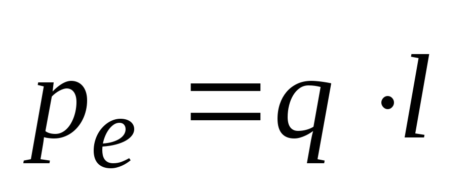

Диэлектрики – это вещества, в которых практически отсутствуют свободные носители заряда. Почти все заряженные частицы внутри диэлектрика связаны между собой и не способны передвигаться по объёму тела. Заряды могут только незначительно смещаться относительно своих равновесных положений. Таким образом, диэлектрики в обычных условиях не проводят электрический ток, поскольку свободных носителей тока в них нет. Удельное сопротивление диэлектриков ρ=10^(6)÷10^(15) Ом.м. Для сравнения: удельное сопротивление металлов (проводников) ρ=10^(-6)÷10^(-8) Ом.м.
При внесении диэлектрика в электрическое поле он поляризуется. Процесс поляризации можно описать на основе представлений о молекулах как электрических диполях.
Электрическим диполем называется система двух одинаковых по величине противоположных по знаку точечных зарядов q и –q (рис.1.1). Плечо диполя (l) – вектор, начинающийся на отрицательном заряде и оканчивающийся на положительном. Диполь называется точечным, если его плечо много меньше расстояний до других тел. Дипольный момент электрического диполя – вектор, равный произведению модуля заряда диполя на плечо диполя 
Электрическим диполем называется система двух одинаковых по величине противоположных по знаку точечных зарядов q и –q (рис.1.1). Плечо диполя (l) – вектор, начинающийся на отрицательном заряде и оканчивающийся на положительном. Диполь называется точечным, если его плечо много меньше расстояний до других тел. Дипольный момент электрического диполя – вектор, равный произведению модуля заряда диполя на плечо диполя